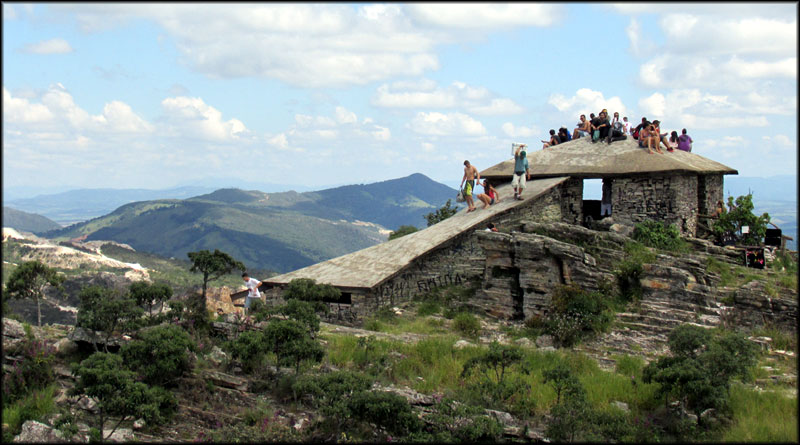
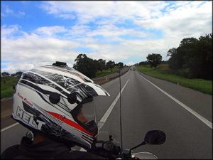
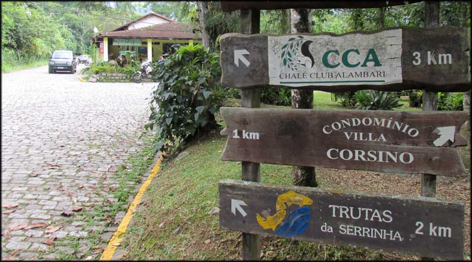
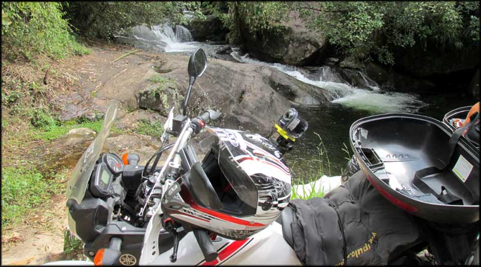
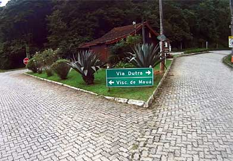

Em abril de 2015, às vésperas do feriado de semana santa, eu pensava no que fazer para aproveitar a folga prolongada, e lembrei de um lugar que eu queria conhecer há muito tempo. E a decisão foi quase instantânea: vamos para Minas Gerais, vamos para São Thomé das Letras!
Pirâmide, em São Thomé das Letras
Pesquisei rapidamente na internet, e as pousadas já estavam praticamente sem vagas. Então pensei em acampar, mas eu iria com garupa, e ter que levar equipamentos de camping e a bagagem de duas pessoas exigiria muita tralha na moto.
Procurando uma alternativa, encontrei um quarto disponível na pousada Souza Reis, e, apesar do preço um tanto alto (não lembro o valor, mas era pelo menos o dobro do que cobravam em finais de semana normais), resolvi fazer a reserva.
Tudo pronto, era só definir o roteiro e mapear o caminho. Aí surge o lado inquieto, de querer aproveitar tudo ao mesmo tempo. Decidi que não iria pela estrada, asfaltada, como fazem as pessoas normais e racionais. Resolvi que iria pelas ruas vicinais, não asfaltadas, e conhecer as cidades pequenas no caminho. Vamos desafiar Darwin! Resultado: a viagem que seria feita normalmente em pouco mais de 5 horas, foi feita em mais de 12 horas, direto. Com muita aventura e off road.
Então, deu tudo certo!
Começo da aventura até São Thomé das Letras
Arrumei as bagagens na moto, utilizando inclusive os alforges, e saímos do Rio de Janeiro não muito cedo. Após um trânsito congestionado e travado, consegui chegar na Via Dutra, e a partir da altura de Piraí, finalmente tive a sensação de estar passeando, com a estrada livre para curtir. Na via Dutra, com destino a São Thomé das Letras
Saímos da Dutra no trevo para Penedo, e após ver uma placa resolvi entrar para conhecer Serrinha do Alambari. Tinha visto fotos de uma cachoeira alucinante, e achei que fosse conseguir passar por lá, para conhecer e retornar em outra oportunidade.
Desvio para Serrinha do Alambari
Assim, sai da RJ-163 e seguimos na direção apontada pela placa. Já quase no início, o asfalto acabou, e passamos a rodar por estrada de chão, mas com o barro bem compactado, e sem muitas valas, que eram fáceis de evitar. Era mais longe do que imaginei, devido ao ritmo lento, mas chegamos na praça “central” da pequenina cidade. Praça em Serrinha do Alambari
Calor forte. Lá tentamos nos informar com o pessoal de um botequim, sobre como chegar na tal cachoeira Poço dos Dinossauros. Não tiveram muita convicção para dizer onde ficava, disseram mais ou menos a direção, e resolvemos procurar nós mesmos.
Após mais um percurso em estrada de chão, vi a entrada de um camping, e parei para perguntar. O funcionário da portaria disse que a cachoeira ficaria lá dentro, e era propriedade privada, custando R$ 12 por pessoa para ir até a cachoeira, que ficaria após uns 30 minutos de trilha a pé.
Procurando cachoeiras em Serrinha do Alambari
Ora, eu só queria ver a tal cachoeira para voltar futuramente e aproveitar, e apesar de estar um calor escaldante e já me imaginar dando um mergulho na água gelada, ainda teríamos um longo trajeto até São Thomé das Letras.
Não sabia quanto tempo demoraria para chegar, e com a pousada já paga não havia como mudar de planos repentinamente. Também não sabia de verdade se a tal cachoeira realmente ficava lá, mas o tempo curto não permitia ficar procurando muito mais. O jeito foi voltar para a RJ-163 e seguir direção Visconde de Mauá.
De volta ao Trajeto
De volta ao asfalto, boas curvas, que eram divertidas sempre que não havia um carro em ritmo de tartaruga à frente, pois a ultrapassagem exigia cautela na pista simples e sinuosa. Passagem por Visconde de Mauá destino São Thomé das Letras
Chegando em Visconde de Mauá, passei direto pela cidade, e peguei a RJ-151, até chegar na indicação para a cidade de Mirantão, já no estado de Minas Gerais. Ali começava a parte com emoção do passeio, com destino final em São Thomé das Letras. Fim do asfalto. E a diversão começa é quando o asfalto termina.
Continua no próximo artigo... em breve, Passeio em São Thomé das Letras parte 2.